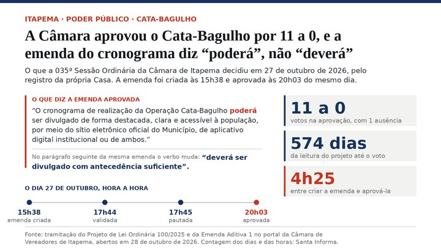

Itapema · Saúde
Itapema · SaúdeItapema publica 282 crianças atendidas no CAP-TEA e nenhum número de quem espera, e uma indicação na Câmara pede fila à vista em quatro programas
O mesmo CAP-TEA, e o número de fila que continua não saindo.
A 035ª Sessão Ordinária da Câmara de Itapema aprovou nesta terça, 27 de outubro, o Projeto de Lei 314/2025, que cria no Centro de Atendimento ao Autismo um programa de apoio às mães de crianças com TEA. Foram 11 votos a favor, nenhum contra e uma ausência. Abrimos as duas emendas aprovadas junto: uma suprimiu o item que previa estagiários de Psicologia, Serviço Social e Enfermagem por convênio com a UNIVALI, para “sanar inconstitucionalidade”. A outra acrescentou oficinas profissionalizantes e prioridade no atendimento psicossocial do SUS.
Em 30 segundos · Modo de Leitura, formato original Santa Informa
A Câmara de Itapema votou na terça, 27 de outubro.
Aprovou o Projeto de Lei 314/2025.
Foram 11 votos a favor e nenhum contra.
Uma vereadora faltou, Lorita Duro Montagner.
O projeto cria um programa no CAP-TEA.
O CAP-TEA é o Centro de Atendimento ao Autismo da cidade.
O programa se chama “Enquanto Eles Cuidam Deles, Cuidamos Delas”.
É voltado às mães de crianças com autismo atendidas lá.
A ideia é usar o tempo em que a mãe espera o filho.
Esse tempo vira atendimento para ela.
O projeto é de Wanderley Dias.
Ele não está entre os 13 vereadores da legislatura atual.
O projeto foi lido em 22 de julho de 2025.
Da leitura ao voto foram 462 dias, conta nossa.
Ficou 400 dias na Comissão de Educação, Saúde e Assistência.
Duas emendas foram votadas junto com ele.
A primeira é supressiva, da Comissão de Legislação e Justiça.
Ela cortou o inciso III do artigo 2º.
Esse inciso previa estagiários no atendimento.
Eram de Psicologia, Serviço Social e Enfermagem.
Viriam por convênio com faculdade, a UNIVALI entre elas.
A justificativa da emenda tem uma linha.
Diz que foi para “sanar inconstitucionalidade”.
A segunda emenda é aditiva, de Saulo Ramos.
Ela acrescentou oficinas profissionalizantes da rede municipal.
O objetivo é renda compatível com o cuidado do filho.
Acrescentou também a participação do resto da família.
E criou um artigo novo.
Ele dá prioridade no atendimento psicossocial do SUS no município.
Vale para mães que cuidam em tempo integral.
O que sobrou do artigo 2º tem cinco ações.
Rodas de conversa e grupos com psicólogos.
Oficinas de autocuidado e saúde mental.
Uso do tempo de espera como cuidado.
Oficinas profissionalizantes e participação da família.
O texto diz que tudo pode sair por parceria e voluntariado.
Sem ônus direto ao Executivo.
Em outubro publicamos que o CAP-TEA atende 282 crianças.
E que a Prefeitura não publica o tamanho da fila.
O texto aprovado vai agora à sanção do prefeito.
Poder PúblicoPublicada em Redação Santa Informa
![Painel com o rótulo Itapema, saúde, mães atípicas e o título o que a Câmara tirou e o que pôs no programa para mães atípicas do CAP-TEA de Itapema. Seis linhas listam as ações do artigo 2º do projeto, cada uma com um selo à direita: rodas de conversa e grupos terapêuticos, mantido; oficinas de autocuidado e saúde mental, mantido; estagiários de Psicologia, Serviço Social e Enfermagem por convênio com a UNIVALI, suprimido, em vermelho e com o texto riscado; uso do tempo de espera das mães, mantido; oficinas profissionalizantes da rede municipal, acrescentado; prioridade no atendimento psicossocial do SUS, acrescentado. Embaixo, três quadros de número trazem 462 dias da leitura do projeto ao voto, 11 a 0 votos com 1 ausência e sem ônus direto ao Executivo.](imagens/webp/ilustracao-m338.webp)
A Câmara de Itapema aprovou nesta terça, 27 de outubro, por 11 votos a 0 e uma ausência, o Projeto de Lei 314/2025, que cria no CAP-TEA um programa de apoio às mães de crianças com autismo. O projeto foi lido em 22 de julho de 2025, ou seja, 462 dias antes do voto, conta nossa. Abrimos as duas emendas aprovadas junto com ele: uma tirou do texto o item dos estagiários da UNIVALI, e a outra pôs oficinas de profissão e prioridade no SUS.
O programa se chama “Enquanto Eles Cuidam Deles, Cuidamos Delas” e parte de uma ideia simples: aproveitar o tempo em que a mãe fica esperando o filho ser atendido no Centro de Atendimento ao Autismo. Esse tempo passa a ser espaço de cuidado para ela. O texto prevê rodas de conversa, escuta ativa e grupos terapêuticos com psicólogos e profissionais de saúde mental, mais oficinas de autocuidado e de manejo do estresse. O autor é o ex-vereador Wanderley Dias, que não está entre os 13 nomes da legislatura atual publicados pela Câmara.
A Emenda Supressiva 1, da Comissão de Legislação, Justiça e Redação Final, cortou o inciso III do artigo 2º. Era o que previa a atuação de estagiários de Psicologia, Serviço Social, Enfermagem e áreas parecidas, em estágio supervisionado, por convênio com faculdades, com a UNIVALI citada no texto. A justificativa da emenda tem uma linha: foi para “sanar inconstitucionalidade”, conforme discutido na comissão. O documento não diz qual era o vício apontado.
A Emenda Aditiva 2, do vereador Saulo Ramos, acrescentou dois incisos e um artigo. Os incisos tratam de oferecer às mães as oficinas profissionalizantes que a rede municipal já tem, para gerar renda compatível com o cuidado do filho, e de estimular a participação do resto da família. O artigo novo dá prioridade no atendimento psicossocial do SUS no município às mães que se dedicam em tempo integral a filhos com TEA ou com deficiência em grau moderado, grave ou profundo.
Com o inciso III fora, o texto aprovado mantém a regra de que as atividades podem ser executadas por parcerias, convênios e ações voluntárias, sem gerar ônus direto ao Executivo. Não há previsão de cargo, contratação ou verba. Em 22 de outubro publicamos que o CAP-TEA atende 282 crianças e que a Prefeitura não divulga quantas esperam por vaga. O texto segue para sanção do prefeito.
O resumo de 30 segundos está no topo e a versão completa é o texto acima. Aqui ficam as três leituras da casa sobre o mesmo assunto.
Clara, a otimista
A ideia por trás desse projeto é das melhores que já li num texto de lei municipal. A mãe já está ali, sentada na sala de espera, duas, três vezes por semana, enquanto o filho é atendido. Esse tempo hoje é tempo morto. O programa pega esse tempo e devolve para ela em forma de conversa, de grupo, de oficina. Não precisa de prédio novo nem de horário novo, porque o horário já existe e a pessoa já está lá.
E a emenda do Saulo Ramos melhorou. Oferecer às mães as oficinas profissionalizantes que a cidade já oferece a todo mundo é usar o que está pronto. Muita mãe de criança atípica larga o emprego porque a rotina de terapia não cabe num expediente. Poder aprender um ofício no mesmo lugar e no mesmo horário em que o filho é atendido muda o orçamento da casa. A prioridade no atendimento psicossocial também é concreta: é a mãe não entrar na fila do zero quando ela própria precisar.
Seu Prudêncio, o criterioso
Merece atenção o inciso que saiu. Era ele que dizia quem ia fazer o trabalho: estagiários supervisionados de Psicologia, Serviço Social e Enfermagem, por convênio com faculdade. A comissão suprimiu para sanar inconstitucionalidade, o que é atribuição dela e pode muito bem estar certo, já que vereador não costuma poder criar obrigação de convênio para o Executivo. Só que o projeto também diz que o programa não gera ônus direto ao Executivo. Sobram as ações, sem braço previsto e sem dinheiro previsto.
Vale acompanhar a regulamentação, que é onde isso se resolve. Se a Secretaria de Saúde firmar convênio de estágio por conta própria, o efeito prático volta, e aí a supressão não custou nada. Se não firmar, o programa vira uma lista de boas atividades esperando quem as faça. Uma sugestão útil: publicar, na regulamentação, quem executa cada ação e com que carga horária. É uma tabela de cinco linhas.
Dito isso, a lei vale a pena existir. Ela dá nome, endereço e respaldo a um atendimento que hoje depende da boa vontade de quem está na ponta. E a prioridade no atendimento psicossocial do SUS é a parte mais sólida do texto, porque não depende de convênio nenhum: depende de ordenar uma fila que a rede já opera.
Caco, o sarcástico
Quatrocentos e sessenta e dois dias para aprovar um projeto que custa zero. Imagina se custasse. O autor apresentou, esperou, esperou mais um pouco, e quando o plenário finalmente votou ele já nem era mais vereador. Saiu da Casa antes do próprio projeto.
A parte que eu mais gosto é a engenharia. O texto previa estagiários para atender. Tiraram os estagiários. Mantiveram o atendimento. Mantiveram o “sem ônus direto ao Executivo”. Então o programa agora funciona com rodas de conversa, oficinas e grupos terapêuticos conduzidos por ninguém em particular, de graça. É um modelo de gestão que, se der certo, merece virar disciplina na UNIVALI, que aliás saiu do texto junto.
Reclamação registrada. Mas tá bom porque é progresso: a cidade agora tem uma lei dizendo que mãe de criança atípica também é gente que precisa de atendimento, e tem prioridade escrita no psicossocial do SUS. Isso não é pouco. Só falta alguém com crachá para abrir a sala.
Fontes: O resultado da votação, o placar de 11 a 0 com uma ausência, as datas de tramitação e os pareceres das comissões estão na página do Projeto de Lei Ordinária 314/2025, no portal da Câmara de Vereadores de Itapema, aberta por nós em 28 de outubro de 2026. O nome do programa, as ações do artigo 2º e a regra de execução por parcerias sem ônus direto ao Executivo estão no PDF da íntegra do projeto. O corte do inciso III e a justificativa de “sanar inconstitucionalidade” estão no PDF da Emenda Supressiva 1. As oficinas profissionalizantes, a participação da família e a prioridade no atendimento psicossocial do SUS estão no PDF da Emenda Aditiva 2. A ordem do dia da sessão está no roteiro da 035ª Sessão Ordinária. Os 13 nomes da legislatura atual estão na página Legislatura Atual da Câmara, conferida por nós na mesma data, e o autor do projeto não aparece nela. O número de 282 crianças em acompanhamento no CAP-TEA é da Prefeitura de Itapema e foi levantado por nós em matéria de 22 de outubro de 2026. As contagens de 462 dias e 400 dias são nossas, sobre as datas registradas pela Câmara. A ilustração do topo foi montada por nós com o texto do projeto e das duas emendas. O projeto traz na justificativa passagens sobre sofrimento psíquico de mães atípicas que não reproduzimos aqui: são argumento do autor, não fato apurado, e o assunto pede sobriedade.
Itapema · SaúdeO mesmo CAP-TEA, e o número de fila que continua não saindo.

Itapema · Poder PúblicoO outro projeto aprovado na mesma sessão desta terça.
 Itapema · Poder Público
Itapema · Poder PúblicoOutro serviço de acolhimento da cidade montado sem número de vaga publicado.